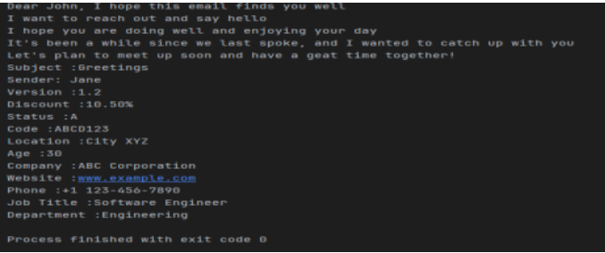
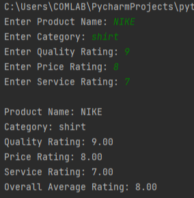

Straw Hat Crew — Midterm Lab Portfolio
An epic-cinematic themed portfolio showcasing Midterm Lab Tasks for ACT-C205. Built by John Michael Dela Torre & Lesther Tongco.
Lab Task 1
a. Problem Statement / Requirements
Complete the set of programming problems provided in the PDF. Follow the required outputs and demonstrate working code.
b. Source Code
See the uploaded PDF or view source in the repository.
Open Task 1 PDFc. Screenshot / Output
Lab Task 2
a. Problem Statement / Requirements
Create a Python program to compute and analyze average product ratings based on quality, price, and service. Display overall rating.
b. Source Code
def cal_ave_rat(quality, price, service):
return (quality + price + service) / 3.0
Open Task 2 PDF
c. Screenshot / Output
Lab Task 3
a. Problem Statement / Requirements
Modify the menuCart program to include choice validation and a 20% senior discount (age 60+).
b. Source Code
menu = {"Burger": 35.0, "Tacos": 50.0, "Fries": 20.0, "Tokneneng": 5.0}
# ...rest of program...
Open Task 3 PDF